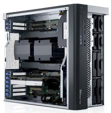
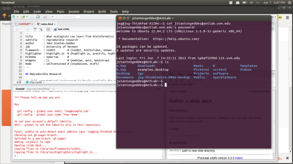

- Full computational environment is freely available for reproduction
- data
- scripts
- software
- Accountability
- Avoid d'oh! moments
- Open access ethos
- Journals (will) require it!
What ecologists can learn from bioinformatics
reproducible research
John Stanton-Geddes
University of Vermont
Reproducible Research
Tools for reproducible research
antlab.uvm.edu

Remote access

Organizing BIG data

Version control
git version control
git add tracks a file
git commit saves changes
git log file history
git diff shows differences among files
git checkout restore to previous version
Github

Backup
...is essential
Assembling a transcriptome
- Collect samples
- Extract RNA
- Quantify
- Library prep for sequencing
- Illumina sequencing
- QC raw reads
- Assemble reads
- Reality check
- Annotation
- SNP discovery
Samples
Only get mRNA transcripts for genes that are expressed!
- developmental stage
- environmental conditions
- time of day
Library prep
Digital gene expression (DGE) tags
- 150-500 bp proximal to 3' polyA tail of mRNA transcript

16-24 samples per sequencing lane ($1000)
Illumina sequencing

Illumina FASTQ
@HWI-ST1073:326:D25DAACXX:6:1101:4672:1944 1:N:0:ATCACG
NATGAATTTCGTCTACTTGATGTAGATAATCGTTGTGTAATACCCTTTAATTATCCCATCCGTATCTTAACAACTTCTATAGATGTAATCCATGCTTGAAC
+
#1=DDFFFGHGDHHJJIJIIJJIIJGIIIJIGHIIEGCIEGCHGGIIJHIJJJJGHHJIJJJFFGIJIJIJJGJHCEHEEDDFDDDF;>AEEDEDDECDCC
@HWI-ST1073:326:D25DAACXX:6:1101:4579:1951 1:N:0:ATCACG
NCTGTATTTATGTTGTTATCAAAAGAACAGGTTGTTAACAGTGGCGTAACTTACGTTACTAAACACGCACAGTTATTGAATAATAACAATAGAGTCGCAAA
+
#1BDDFFFHHHHHIIIJIJJJJJJJJJJJIJHIIGIJG?DFCFG7:?FCDIHDFCGHCFEHJEG@A5:<?<CECC>ACCACDCCD;>C@AC@>C::=>@DD
@HWI-ST1073:326:D25DAACXX:6:1101:4561:1987 1:N:0:ATCACG
CTGGGCTTCGTCACCCACGTAGCTGTCCTTCTGACCCATACCGACCATCACTCCCTGATGGCGAGGTCGGCCGACGATCGAGGGGAAGACGGCGCGAGGAG
+
CCCFFFFFHHGHHJJJIJJJGIJJJGHIJJGIIJIICHIJJJJJIIGIJCHGHIEEHGHHGFFDDD8?BDDDD9>@B<BBB?BBB-5???BB@@@B9<B##
@HWI-ST1073:326:D25DAACXX:6:1101:4832:1916 1:N:0:ATCACG
NCCTCTTTAAAGTACAAGGCTTTCTTTCTTCGGCTTCTCTGCATGGATCAACACGTACTTCATGTATGGTGCATTGTATAGGACGGTCCTCGGAGGCGGAT
+
#11AABDDAFBD?<<@FB=F?FE9@F@9CFEFG68?GGGA?<<?<FACGFGFGDB;@BCF;)@87@@DE)=C?EE7?BCEDBBC@?8;?:A?B/;@BBB<9
100 bp reads
Assemble...
Oases-Velvet (Schulz et al 2012)

Contigs
>HWI-ST261:8:42:10665:176644#ATCACG 1 1 1
AGTGCCAGACGTCCATCACGATGACCGTGACCCAGGCGTCGACCTCATTGGACACGTAAT
TGTAGTTGAGGTCGAGGCGGTTCAGCACATAGC
>HWI-ST261:8:42:10665:176644#ATCACG 2 2 1
TCAAGGAACTGCTCGATCCATCGACCGATCTCGGCGGGCG
>HWI-ST261:8:63:18246:112155#ATCACG 1 3 1
CCGACGTCGACGGCGGCTACACCACCGACCCCCGCGTGGTGCCGAAGGCGCGCCGGCTC
>HWI-ST261:8:63:18246:112155#ATCACG 2 4 1
CTCGATCTGGCGCACGGAAATCTGGGCTTCGTCCTTG
>HWI-ST261:8:8:13814:109994#ATCACG 1 5 1
Gene prediction/annotation
BLAST2GO or GeneMark

Written in R
Reproducibile presentations using slidify
Access this presentation at https://github.com/johnstantongeddes/presentations